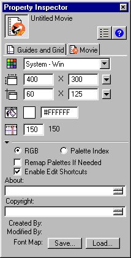

Using Director > Director basics > Introducing the Director workspace > Setting Stage and movie properties
Using Director > Director basics > Introducing the Director workspace > Setting Stage and movie properties |
Setting Stage and movie properties
You use the Property Inspector's Movie tab to specify settings that affect the entire movie, such as how colors are defined, the size and location of the Stage, the number of channels in the Score, copyright information, and font mapping. These settings apply only to the current movie, whereas the settings you choose from File > Preferences apply to every movie.

To set Stage and movie properties:
1 |
Click the Movie tab of the Property Inspector in Graphical view. (Note that the Movie tab appears only if you do not have an object selected on the Stage or in the Score.) |
2 |
To choose a color palette for the movie, select a palette from the Movie Palette pop-up menu. This palette remains selected until Director encounters a different palette setting in the palette channel. |
For a complete discussion of color palettes and using color in Director, see Controlling color. |
|
3 |
To define the size of the Stage, choose a preset value from the Stage Size pop-up menu or manually enter values in the Width and Height fields. |
4 |
To specify the location of the Stage during playback if the movie does not take up the full screen, choose an option from the Stage Location pop-up menu or enter values for Left and Top; these values specify the number of pixels the Stage is placed from the top left corner of the screen, and they apply only if the Stage is smaller than the current monitor's screen size. |
Centered places the Stage window in the center of your monitor. This option is useful if you play a movie that was created for a 13-inch screen on a larger screen, or if you're creating a movie on a larger screen that will be seen on smaller screens. |
|
Upper Left places the Stage in the upper left corner of the screen. |
|
5 |
To set the color of the Stage for the movie, double-click the color box next to Stage Fill Color and select a color, or enter an RGB value in the box on the right. |
6 |
To specify the number of channels in the Score, enter a value for Score Channels. |
7 |
To determine how the movie assigns colors, choose either RGB or Palette Index. |
RGB makes the movie assign all color values as absolute RGB values. |
|
Palette Index makes the movie assign color according to its position in the current palette. |
|
8 |
To remap colors in bitmaps with different color palettes to colors in the current palette, select Remap Palettes If Needed. |
This option dynamically remaps bitmaps on the Stage without changing the cast members. For example, if a cast member uses a grayscale palette, it is drawn on the Stage using the grays available in the common palette. |
|
9 |
To let users cut, copy, and paste Editable fields while a movie is playing, select Enable Edit Shortcuts. |
10 |
To enter copyright and other information about the movie, enter text in the About and Copyright boxes. |
This information is important if your movie is going to be downloaded from the Internet and saved on a user's system. |
|
11 |
To save the current font map settings in a text file named Fontmap.txt, click Save. To load the font mapping assignments specified in the selected font map file, click Load. See Mapping fonts between platforms for field cast members. |